مجموعات العذراء II المجرية هي الامتداد الجنوبي الطويل لعنقود العذراء المجري. تبدأ بمجموعة M61 ومجموعة NGC 4753، وهما المجموعتان اللتان تشكلان الحد الجنوبي لعنقود العذراء المجري، وتمتد هذه المجموعة من المجرات جنوبًا عبر مجموعتي NGC 4697 وNGC 4699 الكبيرتين، وتنتهي على بعد 30 مليون سنة ضوئية من عنقود العذراء بمجموعة من المجرات حول المجرة الضخمة جدًا NGC 5084.
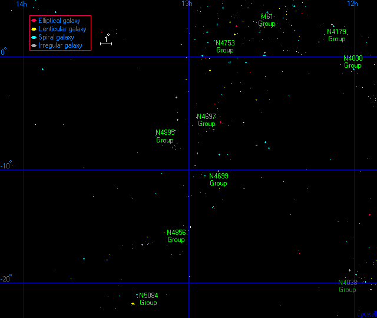
أدناه - ثلاث مجرات في مجموعات العذراء II. (على اليسار) NGC 4030 هي ألمع مجرة في مجموعة صغيرة تقع إلى أسفل يمين عنقود العذراء. (في الوسط) NGC 4123 هي مجرة حلزونية محدبة قريبة في مجموعة NGC 4179. (على اليمين) M61 هي مجرة حلزونية مشهورة وألمع عضو في مجموعة فرعية من المجرات على الحافة الجنوبية لعنقود العذراء.
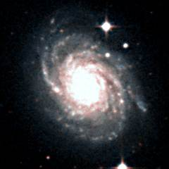 |
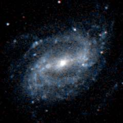 |
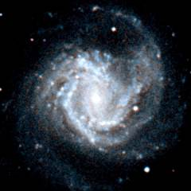 |
| NGC 4030 | NGC 4123 | M61 |
في الأسفل تظهر صورة لـ M104. هذه مجرة مشهورة جدًا تُعرف باسم مجرة السومبريرو. إنها مجرة حلزونية ذات انتفاخ مركزي كبير جدًا. على الرغم من أن هذه المجرة يمكن العثور عليها ضمن مجموعات العذراء II، إلا أنها في الواقع مجرة أمامية تقع على بعد 30 مليون سنة ضوئية منا - أي 20 مليون سنة ضوئية أمام مجرات العذراء II.
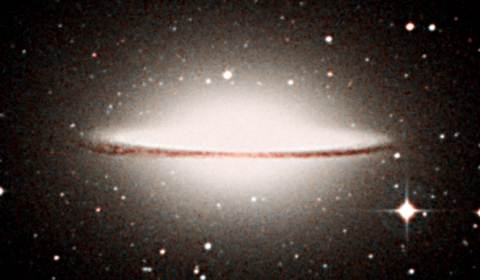
هذه قائمة بأهم مجموعات العذراء II. قد يكون من الصعب تحديد المجرات التي تنتمي إلى أي مجموعة، خاصة حول الحافة الجنوبية لعنقود العذراء حيث يوجد تشويش من المجرات على مسافات مختلفة.
1 2 3 4 5 6 7 8
Name Equatorial Blue Type Size Size RV
Coordinates Mag (') kly km/s
RA Dec
NGC 4030 Group Distance = 60 million ly
UGC 6970 11 58.8 -01 28 14.7 Sm 1.2 20 1838
NGC 4030 12 00.4 -01 06 11.7 Sbc 3.9 70 1814
UGC 7000 12 01.2 -01 18 14.3 Irr 1.0 20 1847
NGC 4179 Group Distance = 55 million ly
UGC 7035 12 03.7 +02 38 14.9 Sa 1.3 20 1577
NGC 4116 12 07.6 +02 41 12.6 SBcd 3.5 55 1659
NGC 4123 12 08.2 +02 53 12.3 SBc 4.1 65 1675
NGC 4179 12 12.9 +01 18 11.8 S0 4.2 65 1595
M61 Group Distance = 55 million ly
NGC 4255 12 18.9 +04 47 13.6 S0 1.3 20 2173
UGC 7387 12 20.3 +04 12 15.1 Scd 1.9 30 2075
M61/NGC 4303 12 21.9 +04 28 10.2 SBbc 6.2 100 1911
NGC 4324 12 23.1 +05 15 12.5 S0 2.8 45 2007
UGC 7522 12 26.0 +03 26 14.5 Sc 2.8 45 1765
NGC 4420 12 27.0 +02 30 12.9 SBc 2.0 30 2029
PGC 40951 12 28.1 +02 55 15.2 Irr 1.0 15 1826
UGC 7612 12 29.0 +02 43 14.8 SBm 2.0 30 1913
NGC 4496A 12 31.7 +03 56 12.1 SBd 3.8 60 2067
NGC 4517A 12 32.5 +00 23 13.1 SBd 3.8 60 1869
IC 3474 12 32.6 +02 40 14.8 Scd 2.2 35 2070
NGC 4527 12 34.1 +02 39 11.5 SBbc 5.9 95 2068
NGC 4533 12 34.4 +02 20 14.6 Scd 2.0 35 2095
NGC 4536 12 34.4 +02 11 11.1 SBbc 7.2 115 2140
UGC 7780 12 36.7 +03 06 15.5 SBd 1.7 25 1777
NGC 4581 12 38.1 +01 29 13.4 E 1.7 30 2139
NGC 4599 12 40.5 +01 12 13.7 Sa 1.7 30 2173
NGC 4632 12 42.5 -00 05 12.6 Sc 2.8 45 2051
NGC 4753 Group Distance = 55 million ly
UGC 7824 12 39.8 +01 40 15.0 Sm 1.6 25 1561
NGC 4636 12 42.8 +02 41 10.4 E 6.5 105 1393
NGC 4643 12 43.3 +01 59 11.6 S0 3.2 50 1658
UGC 7911 12 44.5 +00 28 13.8 SBm 2.4 40 1515
NGC 4688 12 47.8 +04 20 13.5 SBc 3.7 60 1313
NGC 4691 12 48.2 -03 20 12.0 Sa 3.0 50 1442
UGC 7982 12 49.8 +02 51 14.0 Sbc 3.4 55 1484
NGC 4753 12 52.4 -01 12 11.1 S0 5.5 90 1724
NGC 4771 12 53.4 +01 16 12.9 Sc 3.6 60 1456
NGC 4772 12 53.5 +02 10 12.1 Sa 3.3 55 1366
UGC 8041 12 55.2 +00 07 13.5 SBcd 3.2 50 1666
NGC 4808 12 55.8 +04 18 12.3 Sc 2.4 40 1085
NGC 4845 12 58.0 +01 35 12.1 Sab 5.0 80 1421
NGC 4900 13 00.7 +02 30 12.0 SBc 2.2 35 1288
NGC 4904 13 01.0 -00 02 13.0 SBc 2.1 35 1495
NGC 4697 Group Distance = 55 million ly
MCG-1-33-1 12 44.1 -05 41 13.1 Sd 3.0 50 1765
MCG-1-33-3 12 45.7 -06 04 13.6 SBm 3.1 50 1809
NGC 4697 12 48.6 -05 48 10.4 E 5.9 95 1569
MCG-1-33-11 12 48.7 -05 15 ? Irr 1.8 30 1673
NGC 4731 12 51.0 -06 23 12.1 SBc 6.3 100 1825
MCG-1-33-33 12 52.6 -06 17 ? Irr 2.1 35 1861
NGC 4775 12 53.8 -06 37 12.2 Scd 2.2 35 1896
IC 3908 12 56.7 -07 34 13.5 Scd 2.2 35 1627
UGCA 310 12 57.2 -04 10 14.5 Irr 1.6 25 1865
MCG-1-33-59 12 57.3 -05 21 13.8 Sd 1.7 25 1586
MCG-1-33-61 12 58.8 -06 07 15.0 Sd 1.7 25 1931
NGC 4941 13 04.2 -05 33 12.0 SBab 3.5 55 1433
NGC 4948 13 04.9 -07 57 13.8 SBd 2.1 35 1649
NGC 4948A 13 05.1 -08 10 14.1 SBd 1.4 25 1874
NGC 4951 13 05.1 -06 30 12.6 SBc 3.2 50 1500
MCG-1-33-82 13 05.2 -07 53 16.3 Irr 1.1 20 1444
NGC 4958 13 05.8 -08 01 11.7 S0 4.3 70 1438
NGC 4699 Group Distance = 55 million ly
NGC 4699 12 49.0 -08 40 10.6 SBb 3.9 60 1759
NGC 4700 12 49.1 -11 25 12.4 SBc 2.9 45 1737
MCG-2-33-15 12 49.4 -10 07 13.2 SBm 3.5 55 1644
NGC 4722 12 51.5 -13 20 13.6 Sa 1.9 30 1640
NGC 4742 12 51.8 -10 27 12.4 E 2.2 35 1607
MCG-2-33-47 12 54.0 -12 07 14.9 Irr 2.0 30 1151
NGC 4781 12 54.4 -10 32 11.7 SBcd 3.3 55 1590
NGC 4790 12 54.9 -10 15 13.3 SBc 1.5 25 1685
NGC 4802 12 55.8 -12 03 12.3 S0 2.5 40 1347
NGC 4818 12 56.8 -08 31 12.1 SBab 3.5 55 1393
MCG-1-33-60 12 57.8 -09 38 13.8 Scd 3.2 50 1813
MCG-2-33-85 13 00.3 -12 21 14.4 Irr 1.8 30 1905
NGC 4856 Group Distance = 55 million ly
NGC 4856 12 59.4 -15 03 11.5 S0 4.2 65 1668
MCG-2-33-82 13 00.1 -15 22 14.4 Irr 1.3 20 1913
MCG-2-33-88 13 00.7 -15 43 ? Irr 1.7 30 1706
MCG-3-33-32 13 06.3 -15 31 16.3 Irr 1.6 25 1778
NGC 4984 13 09.0 -15 31 12.2 S0 3.1 50 1522
NGC 4995 Group Distance = 70 million ly
NGC 4942 13 04.3 -07 39 13.6 SBcd 1.7 35 2073
NGC 4981 13 08.8 -06 47 12.3 SBbc 2.7 55 2000
NGC 4995 13 09.7 -07 50 12.0 SBb 2.5 50 2086
IC 4212 13 12.0 -06 60 16.4 SBc 1.9 40 1801
NGC 5084 Group Distance = 80 million ly
NGC 5084 13 20.3 -21 50 11.6 S0 10.7 250 2025
NGC 5087 13 20.4 -20 37 12.5 E 2.6 60 2119
ESO 576-50 13 24.7 -19 42 13.3 SBc 3.1 70 2279
NGC 5134 13 25.3 -21 08 12.5 SBb 3.0 70 2053
Other major Virgo II galaxies:
NGC 4457 12 29.0 +03 34 11.8 Sa 2.8 45 1218
NGC 4487 12 31.1 -08 03 12.2 SBc 3.7 60 1379
NGC 4504 12 32.3 -07 34 12.5 SBc 3.9 60 1338
NGC 4517 12 32.8 +00 07 11.1 Sc 10.2 165 1465
NGC 4546 12 35.5 -03 48 11.6 E 3.2 50 1389
NGC 4586 12 38.5 +04 19 12.6 Sa 3.9 60 1133
NGC 4592 12 39.3 -00 32 12.9 Sd 5.8 90 1409
M104/NGC4594 12 40.0 -11 37 9.1 Sa 8.3 75 1426
NGC 4597 12 40.2 -05 48 13.0 SBm 3.6 60 1380
NGC 4665 12 45.1 +03 03 11.5 S0 4.3 70 1098
NGC 4666 12 45.1 -00 28 11.8 SBc 4.4 70 1850
NGC 4684 12 47.3 -02 44 12.3 S0 2.8 45 1904
NGC 4701 12 49.2 +03 23 12.9 Sc 2.6 40 1050
MCG-3-33-30 13 03.3 -17 25 13.5 Irr 5.6 90 1062
NGC 5054 13 17.0 -16 38 11.9 Sbc 4.8 75 2049
NGC 5170 13 29.8 -17 58 12.1 Sc 8.1 130 1800
NGC 5247 13 38.1 -17 53 11.2 SBbc 5.2 85 1647
|
أدناه - ثلاث مجرات في مجموعات العذراء II. (على اليمين) NGC 4536 هي مجرة حلزونية لامعة في مجموعة M61. (في الوسط) NGC 4697 هي المجرة الإهليلجية الكبيرة واللامعة في مركز مجموعة NGC 4697. ومع ذلك، تشير القياسات باستخدام تذبذبات سطوع السطح إلى أنها قد تكون مجرة أمامية تقع أمام المجموعة. (على اليسار) NGC 4699 هي ألمع مجرة في مجموعة NGC 4699.
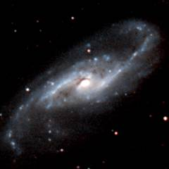 |
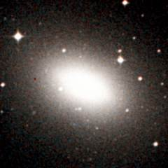 |
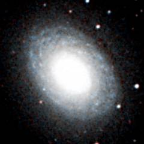 |
| NGC 4536 | NGC 4697 | NGC 4699 |
في الأسفل تظهر صورة لـ NGC 5084. هذه مجرة عدسية ضخمة يبلغ قطرها على الأقل 250 مليون سنة ضوئية (وربما يقترب من 300 مليون سنة ضوئية). تُعد NGC 5084 واحدة من أكثر المجرات ضخامة في عنقود العذراء الفائق بأكمله، وهي أكبر بعشر مرات على الأقل من مجرتنا.
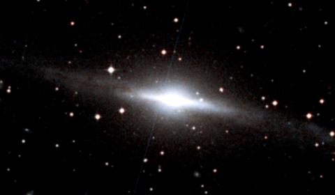
أدناه - ثلاث مجرات أخرى في مجموعات العذراء II. (على اليمين) NGC 4731 هي مجرة في مجموعة NGC 4697 - وهي مثال على مجرة حلزونية محدبة ذات أذرع حلزونية قصيرة جدًا ومفتوحة جدًا. (في الوسط) NGC 4753 هي مجرة عدسية لامعة وألمع مجرة في مجموعة NGC 4753 التي تشكل جزءًا من الحافة الجنوبية لعنقود العذراء. يمكن رؤية خطوط خافتة من الغبار تقطع هذه المجرة. (على اليسار) NGC 4845 هي مجرة حلزونية تقع أيضًا في مجموعة NGC 4753.
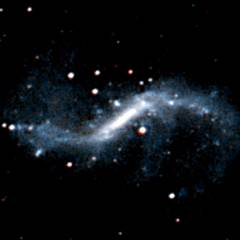 |
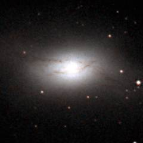 |
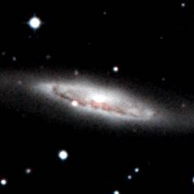 |
| NGC 4731 | NGC 4753 | NGC 4845 |
| خصائص مجموعات العذراء II | ||
|---|---|---|
| الإحداثيات الاستوائية | RA=12h00m إلى 13h30m | Dec=+5° إلى -25° |
| الإحداثيات المجرية | l=275° إلى 315° | b=+40° إلى +65° |
| الإحداثيات المجرية الفائقة | L=110° إلى 140° | B=0° إلى -10° |
| المسافة إلى المجموعات | 55 إلى 80 مليون سنة ضوئية | |
| عدد المجرات الكبيرة | 100 | |
| أسماء أخرى للمجموعات | سحابة العذراء II | |